Все готовые варианты в одном месте. Нажмите на карточку, чтобы открыть живую страницу. Цены, контакты и отзывы — заглушки.
Полноценные рабочие версии. Всё открывается двойным кликом, сервер не нужен.
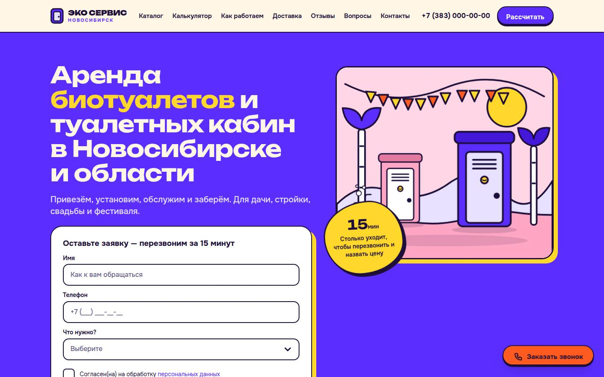
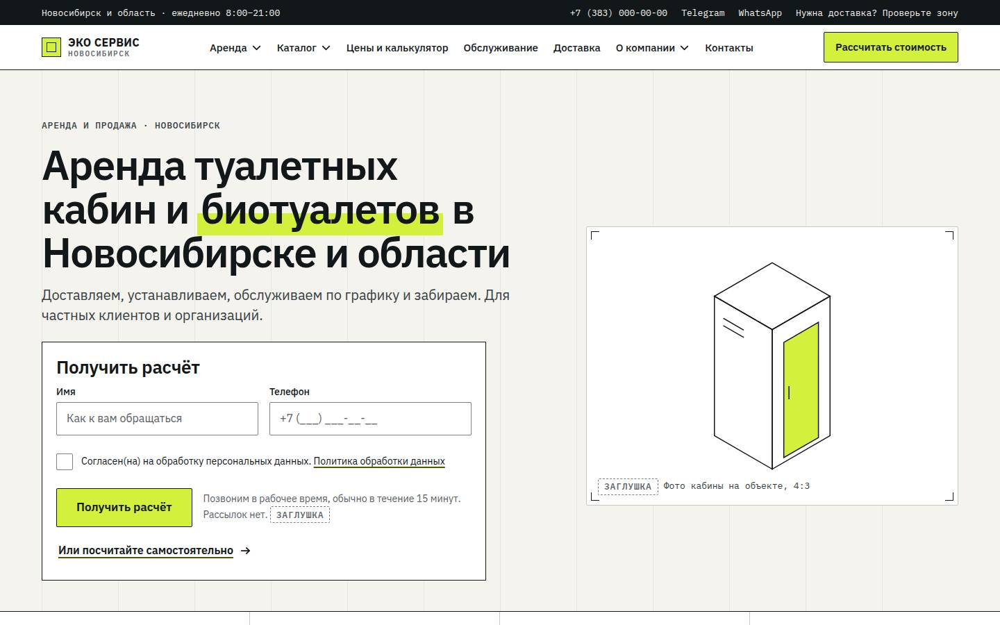
Три концепции первого экрана: одна смелая идея, 2–3 плоских цвета, крупный заголовок.
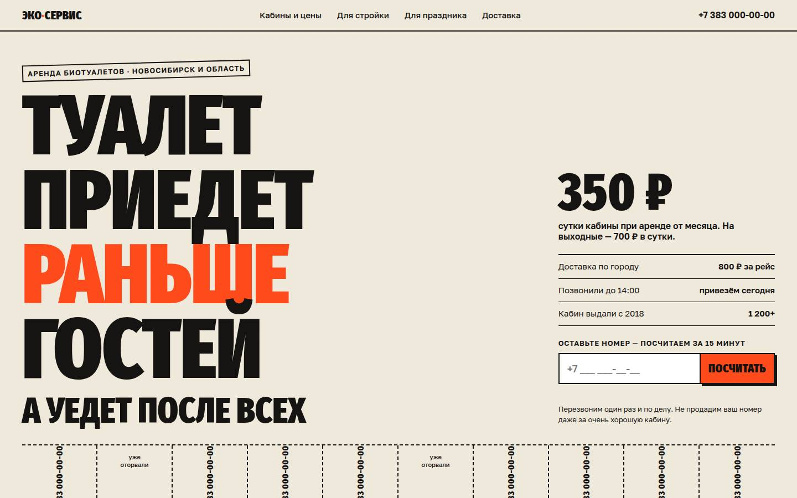
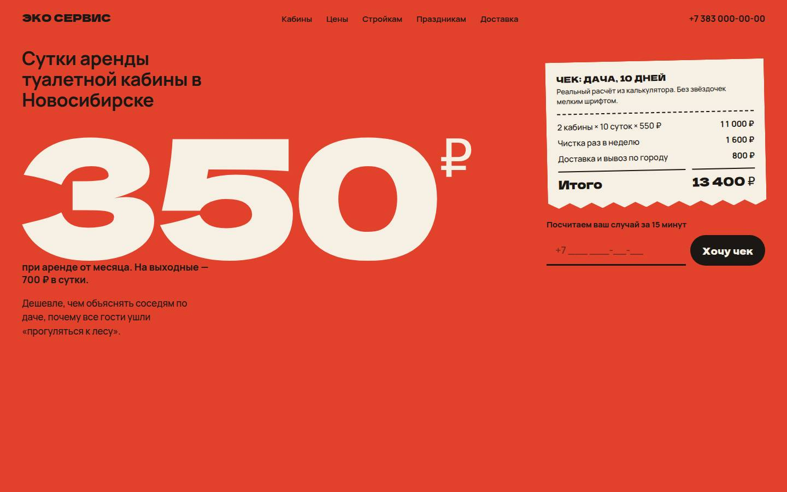
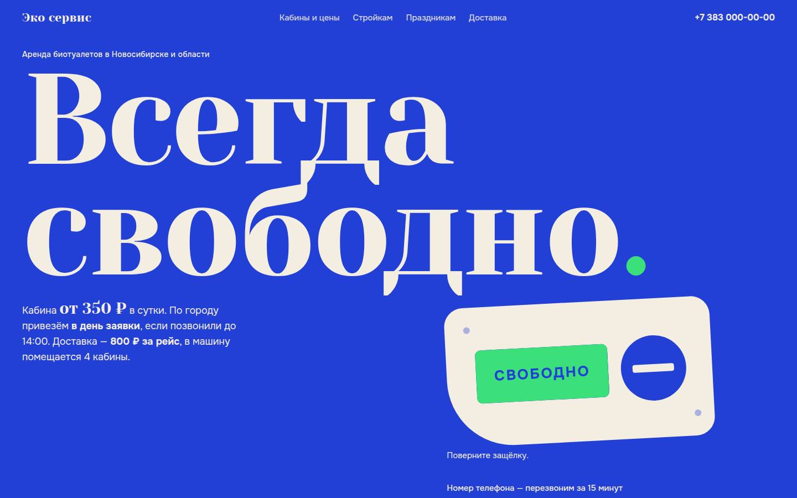
Полные главные страницы в стилистике присланных референсов. Взяты только приёмы, тексты и изображения свои.
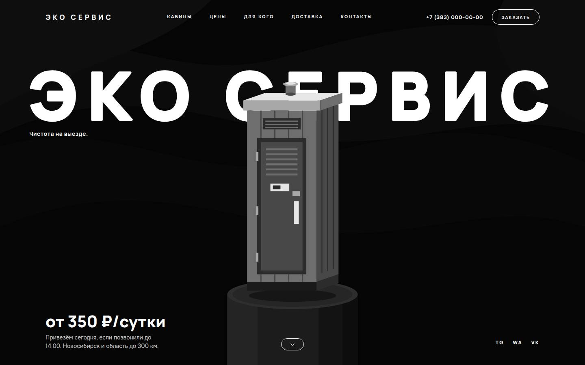
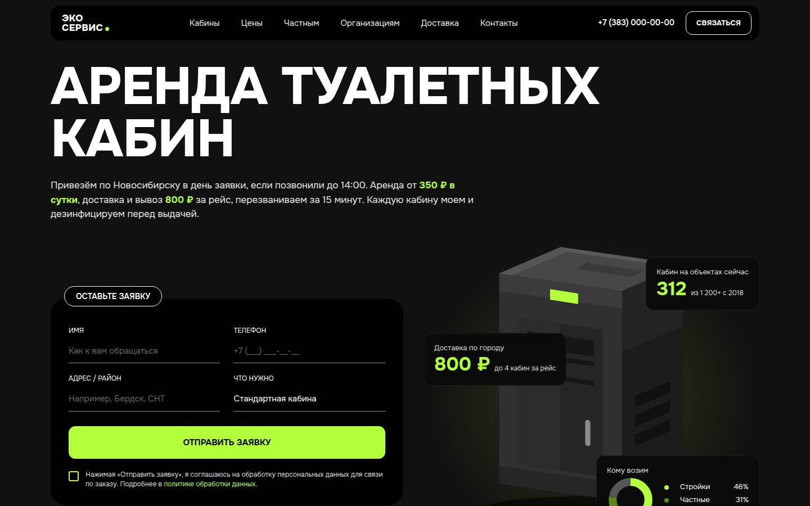
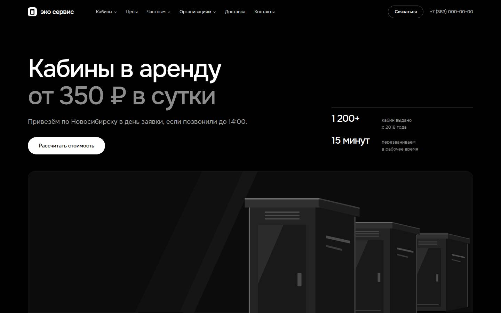
Главная страница C (по luxorr.io) в мягко-голубом фирменном цвете. Пять прочтений одной основы: от тёмного с голубым акцентом до полностью светлого.
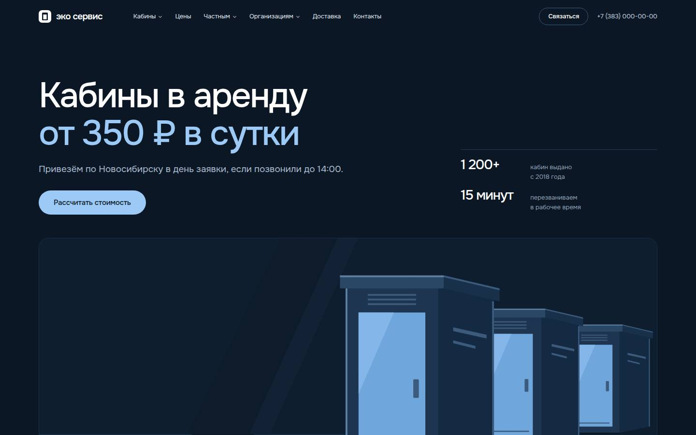
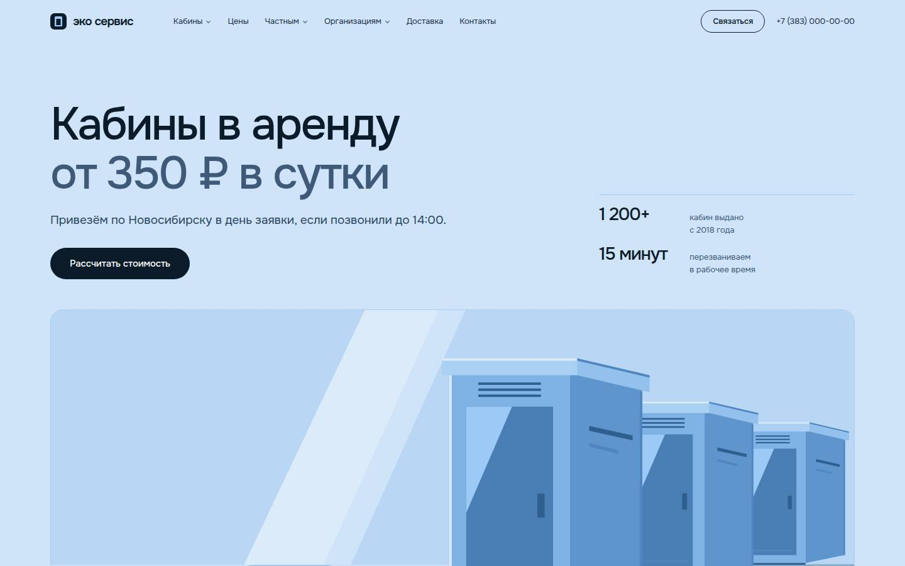
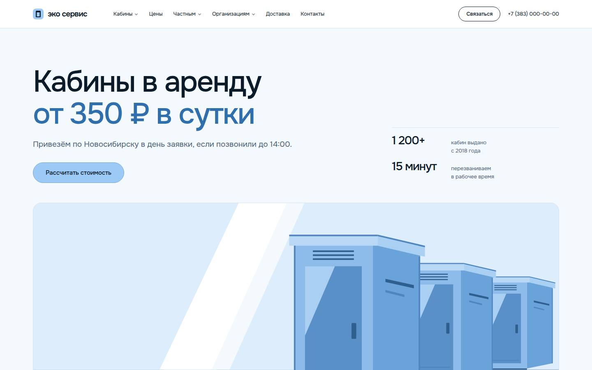
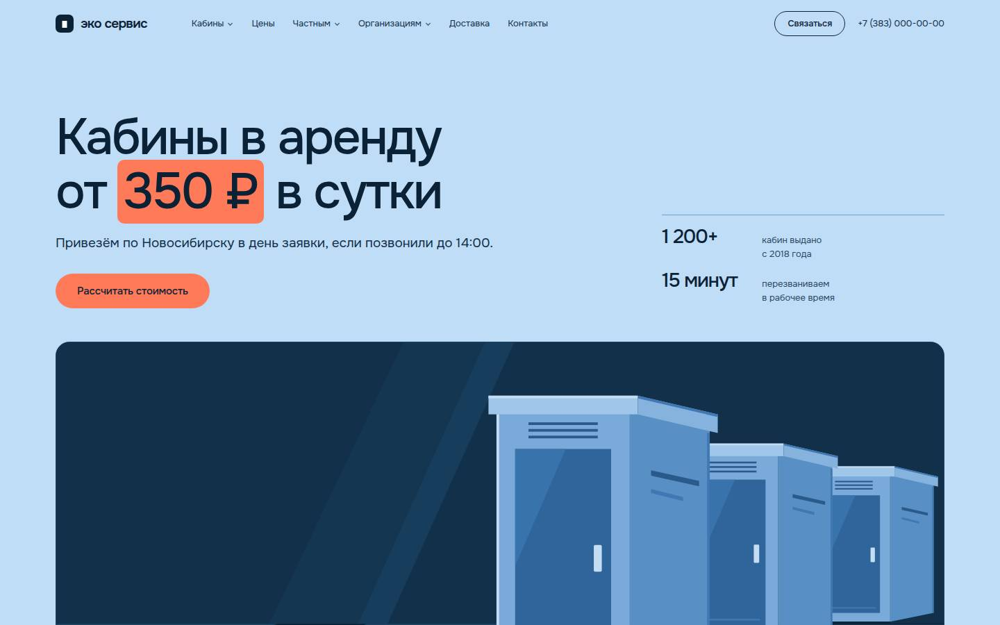
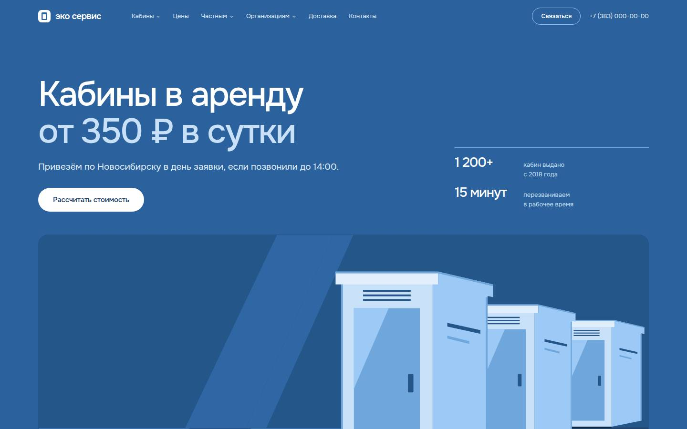